FROM LIVING FEELINGS TO SYSTEM JUDGMENT
住宅机电真正的起点，
不是设备，而是生活。
人在住宅里感受到的是温度、湿度、空气、水与安静，而不是一台台设备。只有先理解家庭成员、建筑条件和长期使用方式，分散的专业才有可能被组织成一个彼此协同的整体。
所以下一部分，我们先不谈品牌和配置，先看一套住宅机电应当怎样建立总逻辑。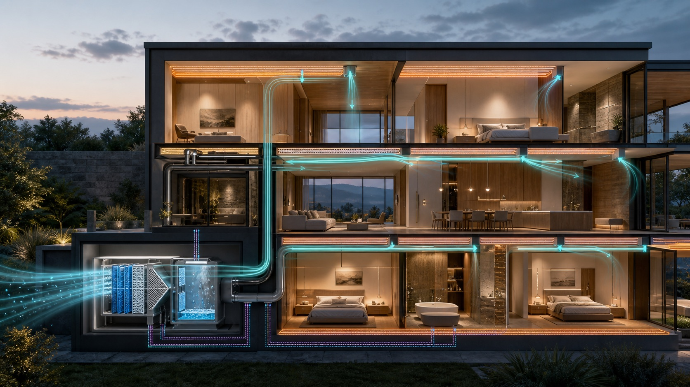
ONE HOME · ONE SYSTEM LOGIC
一套住宅机电
应该先有总逻辑，再有设备
泽丰先判断建筑条件和生活目标，再协调空气、水、空间与控制边界，避免每个专业各自正确、组合之后却不好居住。
RESIDENTIAL ENVIRONMENT SYSTEMS
一套住宅，六条系统主线
从空气与水的日常感受，到地下空间、设计交付和长期运行，泽丰把分散设备组织成可持续验证的居住环境。
RESIDENTIAL MEP PHILOSOPHY
住宅真正的品质
始于看不见的环境秩序
装修完成空间的表面，空气、水、光与声共同决定生活能否长期舒适、安静并保持稳定。
- 01身体真实感受舒适从来不是参数孤岛
- 02环境整体协同空气、水、光与声共同作用
- 03时间长期验证多年以后依然稳定、安静、可维护
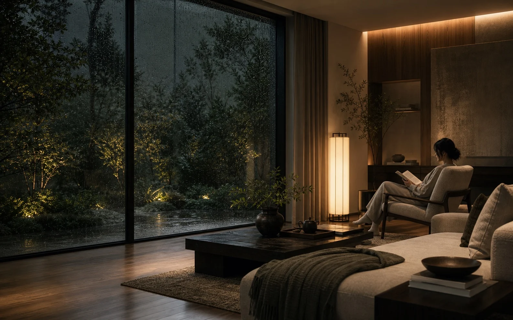
HUMAN FIRST
高端住宅的最终标准
仍然是人的感受
材料与陈设完成第一眼的美，空气、水、温湿、洁净与安宁，才决定身体愿不愿意长期住在这里。
住宅不是设备的容器，而是照料身体、承接日常、恢复生命节律的环境。理解泽丰的住宅理念
DAILY EXPERIENCE
身体每天真正感受的
是四种环境结果
这些感受看似独立，背后却共享同一套机电逻辑。真正好的住宅，在入住以后依然让人感到自然、安静和稳定。
PROJECT EXPERIENCE
成熟系统经验
在湖南本地落地
住宅类型、气候与生活方式各不相同，但对健康、舒适、安静和长期稳定的要求始终一致。
RESIDENTIAL CASE · CHANGSHA
长沙梅溪湖
280㎡改善型大平层
两位成人与一位儿童长期居住。这里希望解决的，不是让设备被看见，而是在潮湿的季节、安静的夜晚和忙碌的清晨，家里始终让人放松。
RESIDENTIAL CASE · CHANGSHA
长沙洋湖
360㎡复式住宅
上下两层分别承担会客、餐厨与睡眠功能。希望每一层都有合适的温度、空气与安静感，让热闹和休息可以同时发生，彼此不打扰。
RESIDENTIAL CASE · HENGYANG
衡阳蒸水南
520㎡庭院别墅
地上三层围绕庭院展开，家庭成员长期居住，也常有中式烹饪和亲友聚餐。这里追求的是院子里能自在呼吸，厨房忙碌之后，整个家依旧清爽、安静。
RESIDENTIAL CASE · CHANGSHA
长沙谷山
680㎡独栋别墅
地上三层与一层地下室同时使用，包含卧室、餐厨、茶室、影音与设备空间。复杂的空间不该带来复杂的日常，无论是地下影音还是楼上卧室，都应当安心而有秩序。
START WITH JUDGEMENT
在确定设备之前
先判断这套住宅真正需要什么
从户型、城市、建筑条件和当前项目阶段出发，形成住宅环境系统的初步判断与深化路径。
预约住宅机电评估Residential MEP Four Dimensions
住宅 MEP 四维度
MEP 即 Mechanical / Electrical / Plumbing，指住宅中的暖通、给排水、强弱电等机电系统。
而间接理解，就是我们熟知的住宅空气、水、光、声，是衡量住宅品质的四个重要维度。
Every breath and drop of water is within the residential MEP system.
我们每一次呼吸与用水，都发生在住宅 MEP 系统之中。
HUNAN INDOOR CLIMATE
湖南住宅的空气问题
从来不只是冷与热
真正难处理的，是长期高湿、偏高露点，以及关窗之后持续而安静的空气更新。
新风、除湿、温度、过滤和噪声必须被放进同一套空气逻辑，住宅才能形成稳定的小气候。
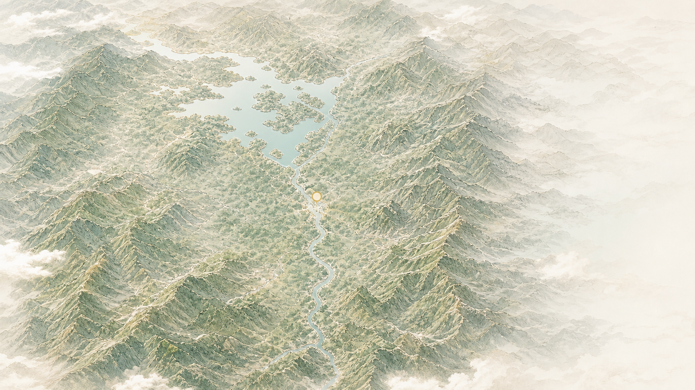
Hunan Climate
湖南真正难处理的，不只是热或冷，而是空气里的水汽长期很重。
山地围合、水网密集与长期偏高的露点一起作用，才让湿热、湿冷、返潮与闷感反复落到身体和空间里。
Humidity Pressure · Premium Living
空间可以很美，居住感受却未必轻松。
如果空气与热湿关系没有被真正组织好，再美的空间，也很难让身体真正放松下来。
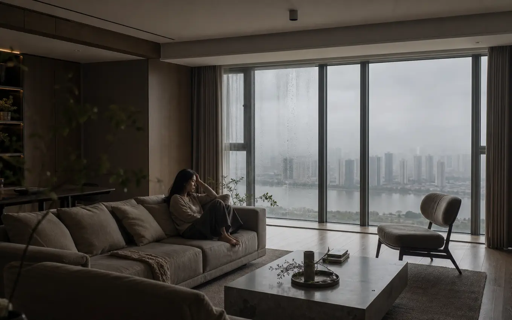
Sensory Comfort · Invisible Systems
好的住宅有感，好的系统无感
夜晚回到家，真正让人放松的，不是某一台设备被看见，而是空气、温度、湿度、光线和声音一起退到合适的位置。
舒适留下，设备退到幕后。
Water Supply & Drainage System
好的住宅，水要在该来的时候从容到达，在该离开的时候安静离开。
供水洁净稳定、热水及时，排水安静无异味。系统被安顿好，生活才会从容、洁净。
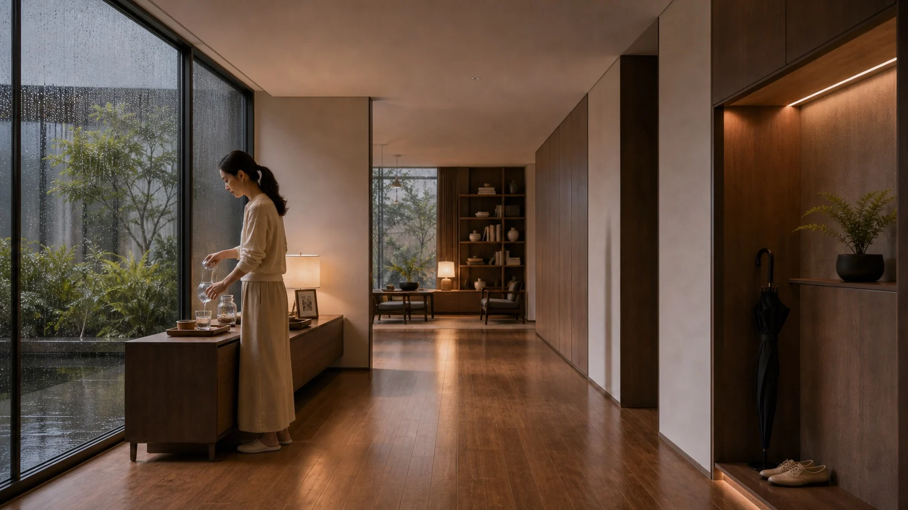
Water System Map
把水的秩序先想清楚，生活里的从容才会慢慢出现。
从来水入口、净化、稳压、热水、排水到低频水点维护，水不是零散设备的拼接，而是一条要被完整组织起来的住宅路径。
Water Demand
先理解生活如何用水，系统才知道该如何回应。
人数、卫浴数量、厨房形态、地下空间、家务区、庭院与长期离家状态，都会改变净水、稳压、热水循环与排水组织的方式。
Water Signals
多数不舒服的用水体验，都不是偶然发生的。
水压忽强忽弱、热水迟缓、排水返味、夜里有声，背后往往不是某一件设备失误，而是整条路径还没有真正建立起来。
多点用水时末端明显掉压。
冬天洗澡前等待被放大。
支路抢水、回水和平衡没有做好。
入口过滤、软水、净饮没有按生活配置。
坡度、管径、检修和使用习惯共同影响。
水封、通气和排水路径没有形成秩序。
管路、阀门、设备间和暗埋点位需要可控。
夜间排水声会打断睡眠和安静感。
System Logic
真正的差异，不在设备多少，而在逻辑是否完整。
好的系统会同时回答五件事: 水如何进入、如何被处理、如何稳定抵达、如何安静离开，以及异常来临时如何被及时发现。
从水进入住宅开始，就要区分饮用、触肤、清洁与设备保护。
让多点用水时不抢压，不靠感觉判断管径与设备。
让沐浴和远端热水保持稳定，减少冬季等待。
让水安静离开，异味不回到室内。
Control & Maintenance
水系统不是交付当天成立，而是多年之后依然稳定。
阀门秩序、检修可达、漏水保护、定排活水与离家模式，决定这个系统是不是经得起时间，而不是只在刚完工时看起来完整。
阀门、过滤、增压、软水、回水有清楚秩序。
关键点位可感知异常，不把风险留给运气。
吧台、客卫、露台等低频点位也要保持水质。
Target State
目标从来不是复杂，而是每一次用水都自然。
无论项目大小，最后都要回到同样的状态: 水压平稳、热水及时、排水安静、防臭可靠、设备长期可维护。
按项目高度、设备与末端需求复核。
远端点位通过回水和控制逻辑优化。
夜间不让系统声音进入生活。
排水顺畅，也要异味不回流。
长期稳定比交付当天更重要。
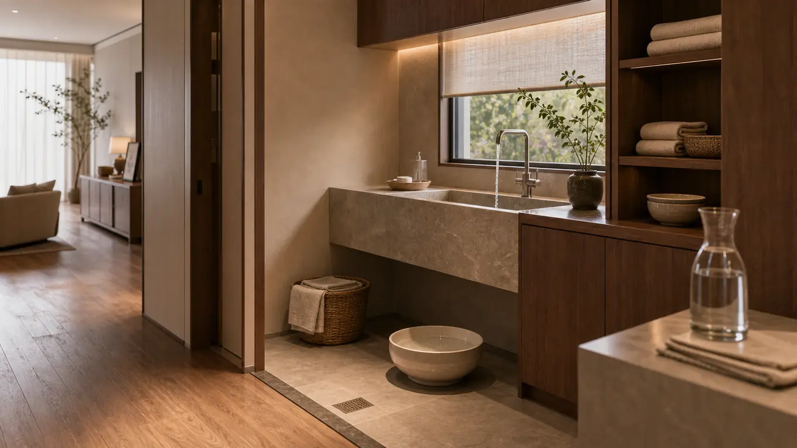
Water Problem Signals
生活里那些被忽略的小打断，常常都指向同一件事: 水的路径还不够完整。
当入口、压力、热水、排水与防臭没有一起成立时，问题就会在不同角落反复出现。
查看常见失衡
Water Problem Signals
生活里那些被忽略的小打断，常常都指向同一件事: 水的路径还不够完整。
当入口、压力、热水、排水与防臭没有一起成立时，问题就会在不同角落反复出现。
花洒、厨房、台盆同时开启时，末端压力明显波动。
远端热水点位等待过久，冬季尤其明显。
热水循环、恒温和平衡没有一起考虑。
水封、通气、坡度和低频点位没有形成稳定组织。
Morning
清晨第一处出水，应该干净、稳定、没有迟疑。
末端响应、水压与入口处理都已回到秩序之中，生活会从一杯水、一处洗漱自然开始。
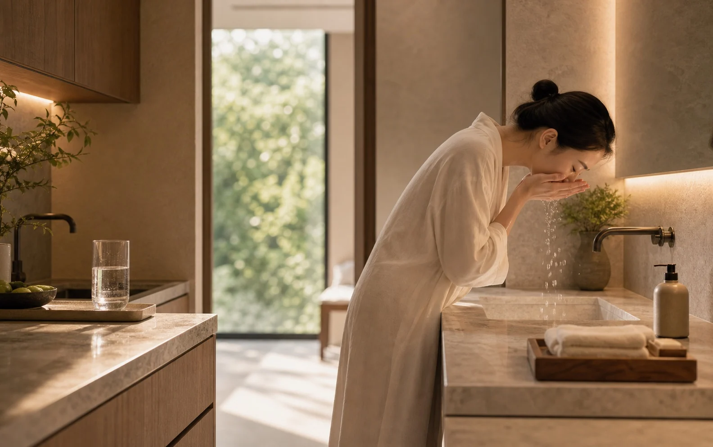
Kitchen
厨房真正需要的，不是出水更多，而是节奏始终稳定。
净饮、主龙头、热水与排水彼此配合之后，备餐、清洗与饮用才会一直顺手，不被打断。
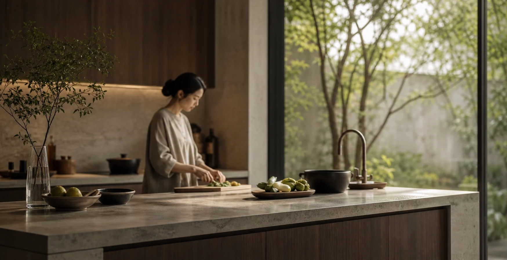
Shower
沐浴的舒服，不在于声势，而在于温度与水感始终稳定。
恒温、压力平衡与热水响应被处理好之后，水会从清洁变成一种让身体慢慢放松下来的介质。
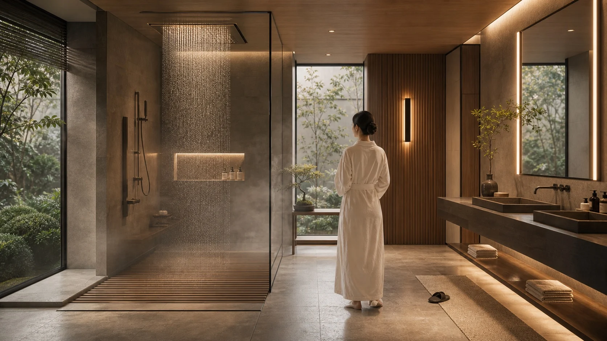
Drainage
夜里的排水，应该被听不见，也不被闻见。
坡度、水封、通气与静音组织同时成立，水才会安静离开，而不是把声音与气味重新留在室内。
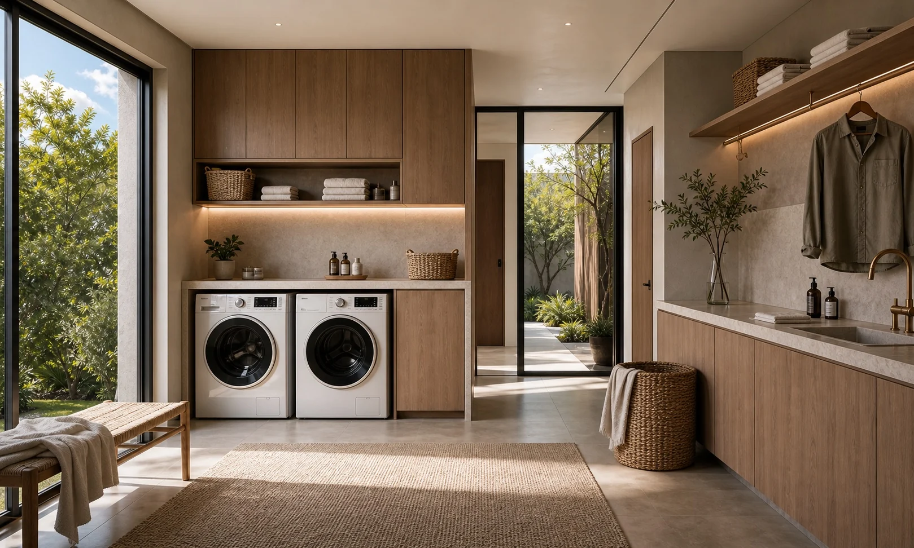
Garden
庭院的鲜活，不该靠反复记得，而应来自稳定的水路安排。
分区灌溉、联动控制与压力组织被提前想清楚，植物与季节之间才会保持一种持续、柔和的联系。
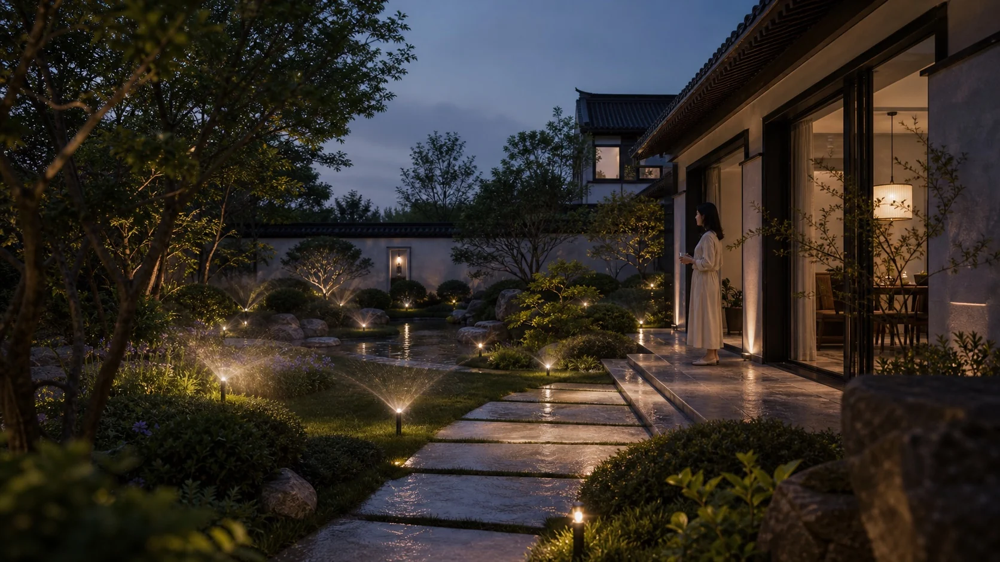
Soft Rain
水如果被调得刚好，沐浴会更像一种恢复，而不是一次冲刷。
顶喷、肩颈水流、恒温与回水共同稳定后，触肤的水感才会柔和，节奏才会慢下来。
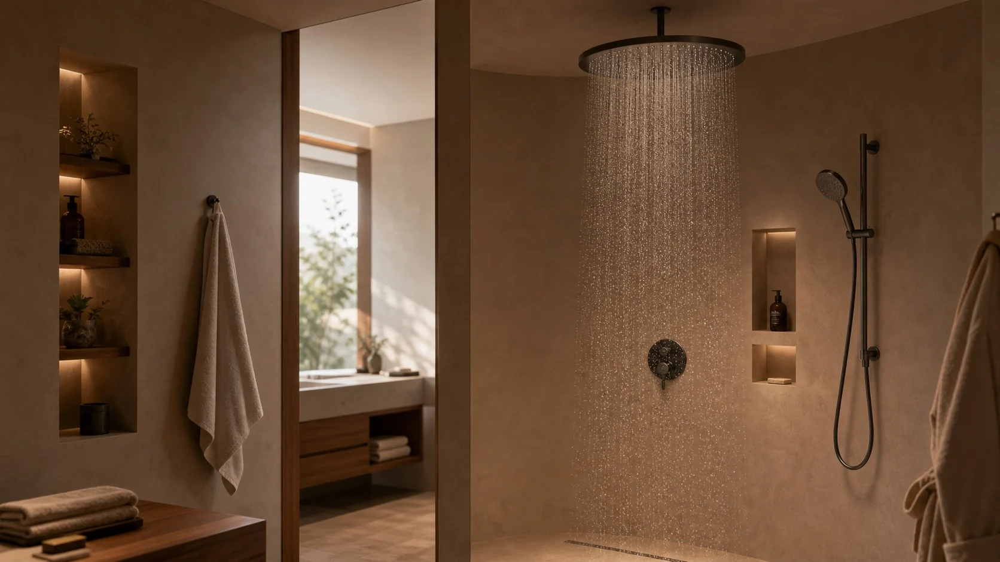
Island
水在厨房里的秩序，往往决定了整个空间的从容程度。
清洗、备餐、净饮与排水在同一处发生时，越是稳定的系统，越能让动作保持连贯而轻松。
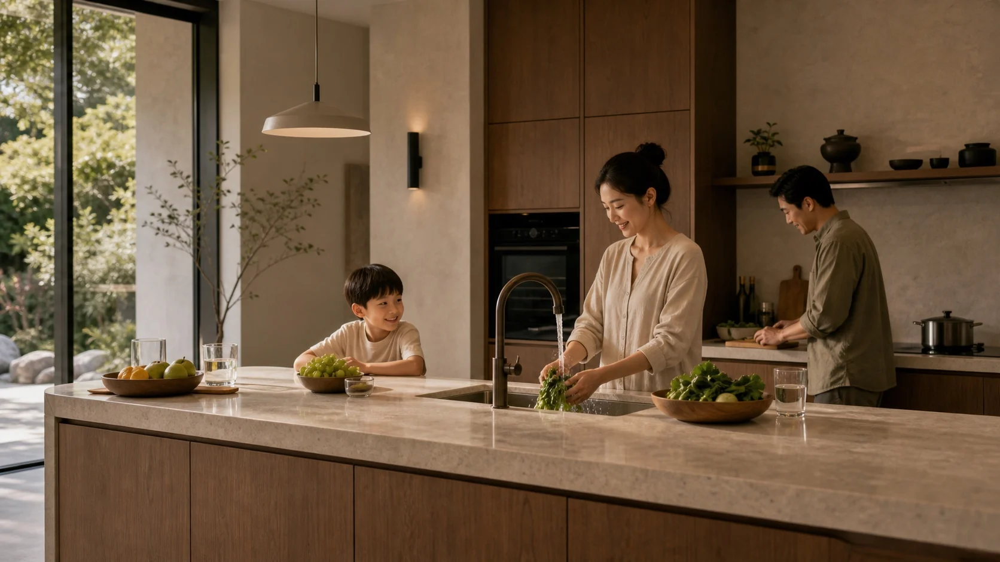
Drinking
饮水这件事，应该像伸手取光一样自然。
净饮、加热与出水稳定被藏进日常之后，无论是一杯水还是一壶茶，都不需要额外等待与迁就。
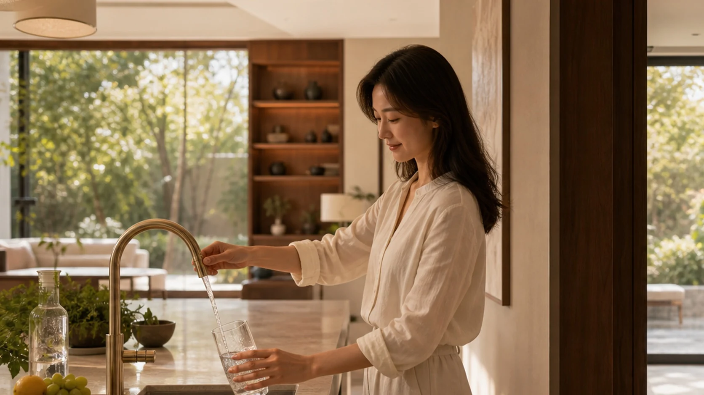
Fresh Loop
好水不只在高频点位成立，低频水点也应该一直保持鲜活。
循环、定排与末端更新形成闭环之后，客卫、吧台与备用空间不会因为久置，而慢慢失去清洁感。
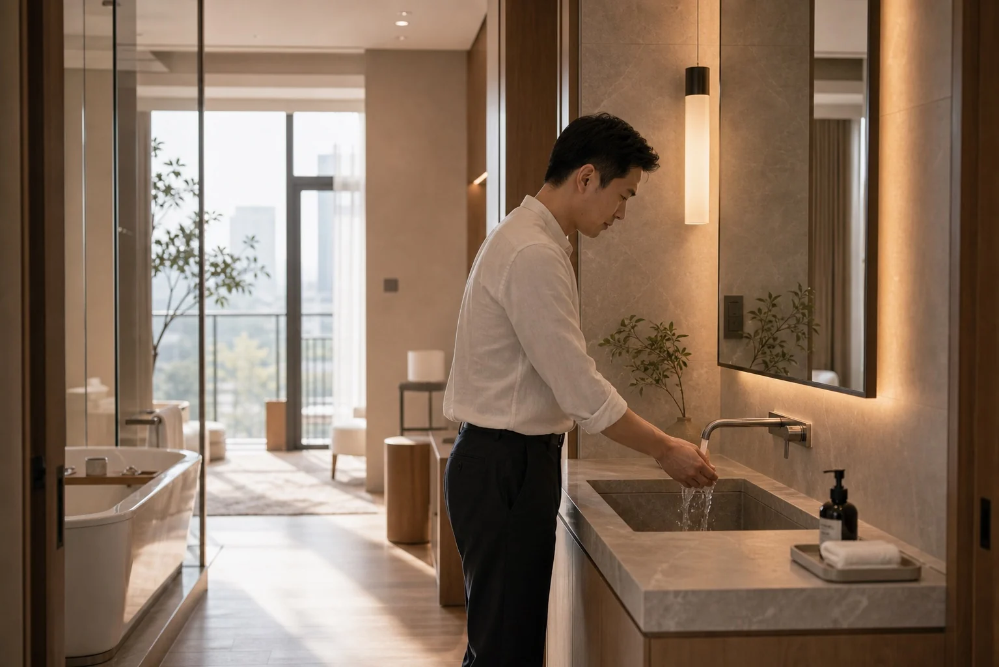
RO Kitchen
水进入烹饪之后，它的质量会直接进入味道本身。
纯水、软水与厨房热水各归其位，洁净度与口感层次才会真正进入日常的饮食体验。
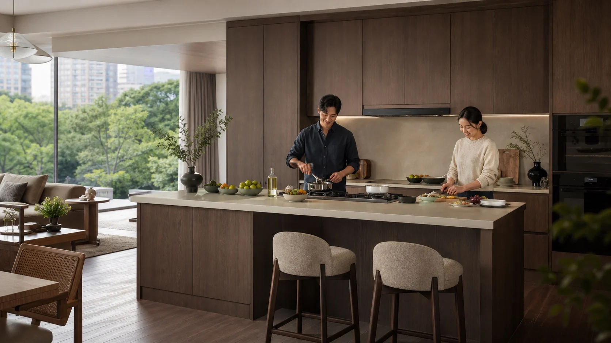
Silent Drain
真正好的排水，往往存在于人几乎察觉不到的时候。
管径、坡度、通气与包覆细节处理好之后，夜里的排水动作不会再进入家人的休息与情绪。
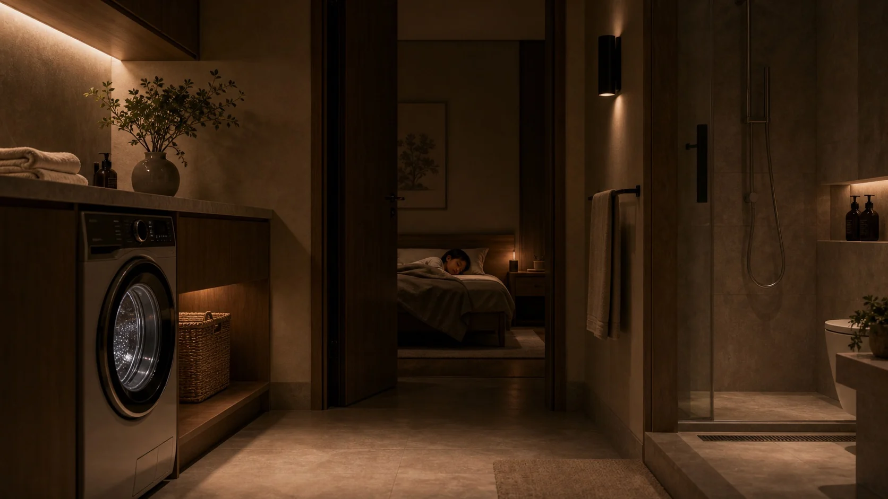
Balanced Flow
多点同时用水时，家里依然应该保持一种平静的稳定。
流量、压力与分区平衡被组织好之后，厨房、台盆与净饮不会彼此牵制，日常也不会忽强忽弱。
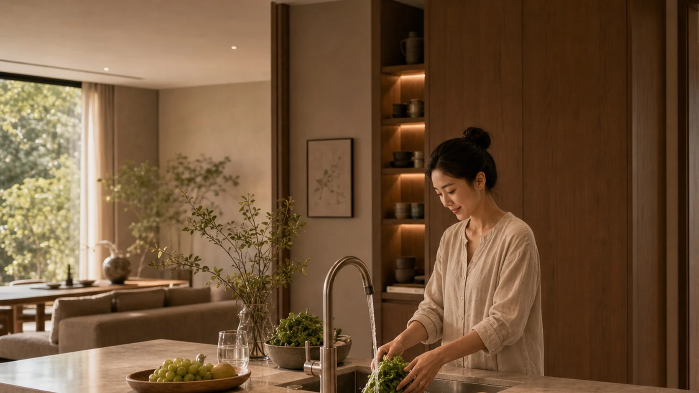
Hot Water
热水真正被做好之后，人不会再把等待当成理所当然。
温控、循环与末端保护一起成立，厨房、洗手与沐浴才会一直稳定，不忽冷忽热，也不拖慢生活。
Auto Flush
不常使用的水点，也需要被温柔地维持在新鲜状态。
通过定排、冲洗与控制逻辑，低频空间不会因为长期沉默，而累积滞水、异味与水质风险。
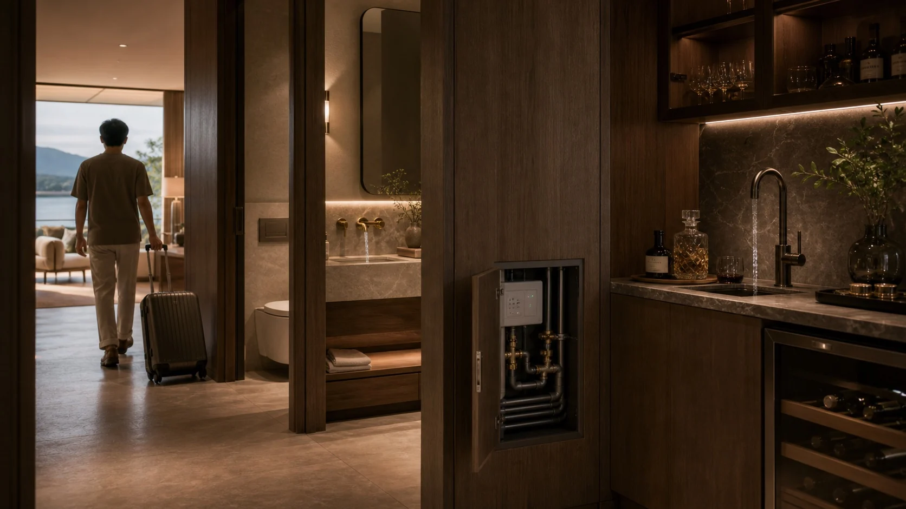
Sewage Lift
地下空间要真正可用，排水就不能成为隐藏的边界。
污水提升被安静安放进系统以后，地下室的卫浴、家务与吧台功能，才会真正成立并长期可靠。
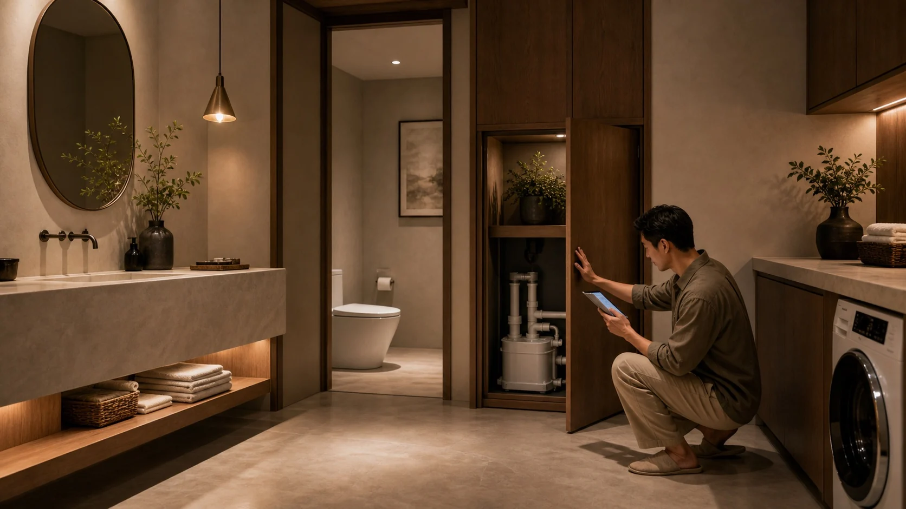
Rainwater Lift
面对暴雨时，真正让人安心的，是雨水早已被安排好去路。
在下沉前院、集水坑、排水沟与提升设备之间先建立秩序，积水与倒灌风险才不会等到下雨那一刻才被看见。
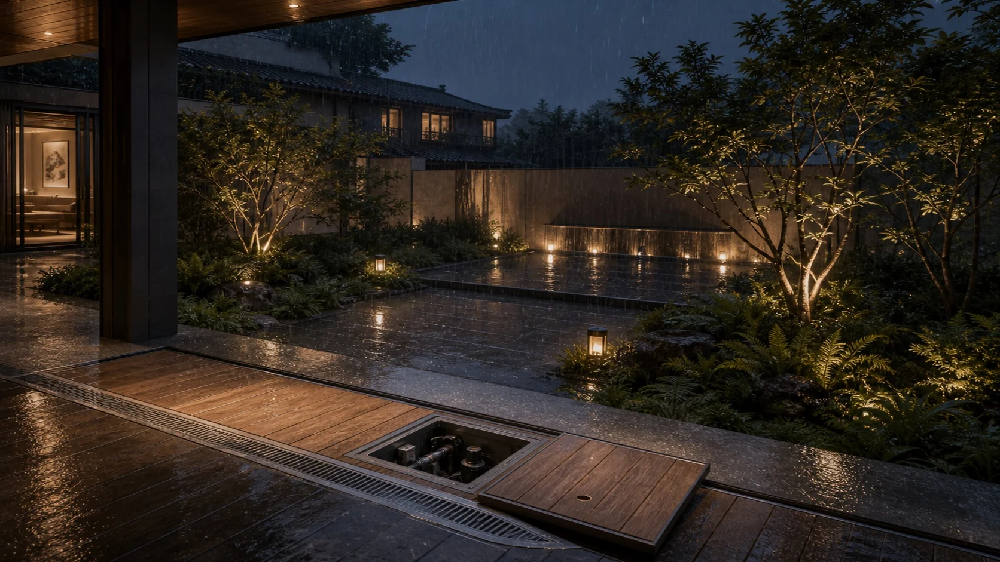
Residential Air System
好空气，是家里一直舒服的底色。
当高湿与高露点被真正回应之后，空气系统才开始进入生活本身。它不是只把温度压下去，而是把湿气、闷感、异味、噪声和直吹感一起收住，让室内慢慢回到清爽、安静、呼吸自然的状态。
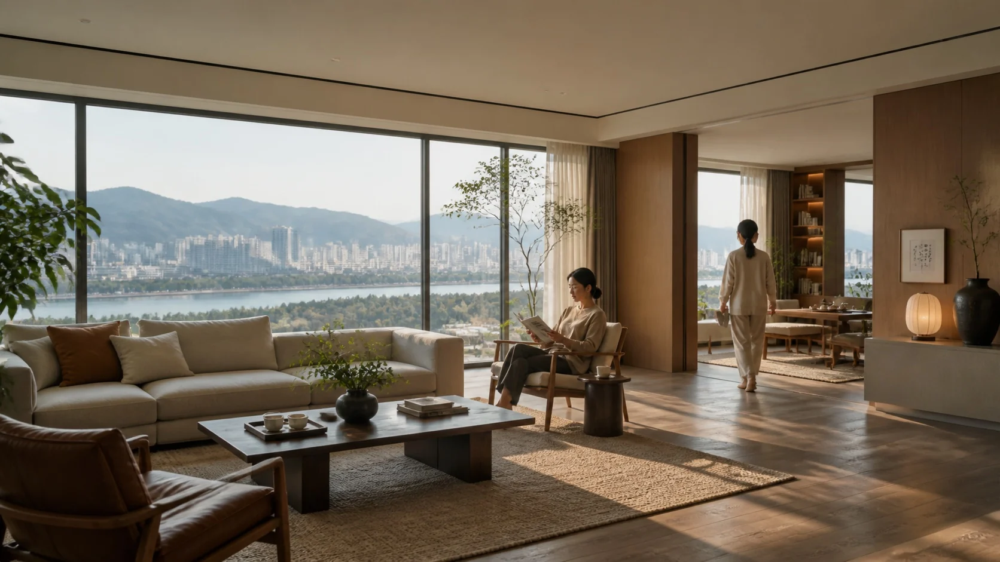
Air System Architecture
好空气不是一台设备，
而是一条持续运行的空气路径
室外空气进入住宅之后，需要依次经过过滤、温湿度处理、分区输送、污染排出与数据校核。任何一段缺失，最后都会变成闷、黏、直吹、异味或噪声。
深入了解 DOAS 五恒空气系统过滤室外颗粒物，并按真实人数组织新风量。
不让降温承担全部除湿任务，持续控制露点。
末端负责冷暖，风速、温差与送风位置共同降低吹感。
厨房、卫浴与生活异味沿明确路径排出，不在室内迁移。
温湿度、CO₂、颗粒物与噪声被持续观察和复核。
Residential Air · Quiet Conclusion
空气真正被安放好之后，住宅才会慢慢回到适合人居住的状态。
看不见的温度、湿度、露点、含氧感与安静背景，会一起决定一个家最终给人的感受。我们所理解的住宅空气系统，并不是让设备被看见，而是让身体在其中呼吸自然，情绪放松，生活重新变得从容。
Basement System · Below-Ground Comfort
好的住宅地下室，不是把生活搬到地下，而是让人忘掉它在地下。
水、湿与空气停滞被系统解决，地下室才能真正干爽、安静，成为可以久留的生活空间。
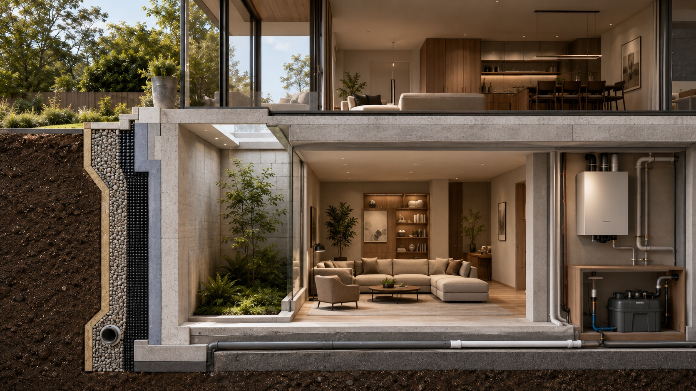
Basement System Map
好的地下室，应该先让人忘记它在地下。
功能、空气、水汽、排水与建筑细节， 最终都会回到一种感受： 这个空间是否安静、自然， 是否让人愿意久留。
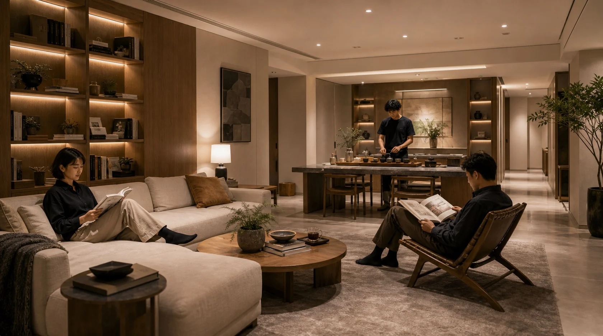
Basement Functions
地下室不是附属角落，它可以承接完整生活。
当地上生活自然向下延展， 地下室也可以拥有厨房、餐厅、影音、会客、阅读、卧室与收藏。 它的价值，不在“多一个空间”， 而在“多一层完整生活”。
Basement Survey
地下室的不适，通常先从感受开始。
潮、湿、闷、霉、气味与呼吸不畅， 往往并不是主观印象。 它们背后通常对应着湿度、露点、通风、 CO₂、氡气与排水组织的失衡。
人的感受
扶手、台面、织物都带着潮气。
空气不轻，材料吸湿感明显。
人多时更容易胸口发闷、呼吸不畅。
卫生间、储物与软装之间容易串味。
柜后、墙角、织物容易进入霉菌环境。
并非温度低，而是围护表面温度偏低。
空间像被压住，恢复速度慢。
这是地下室最该被消失的感受。
监测与风险
高湿会把“潮”“湿”“霉”放大，EPA 建议室内相对湿度控制在 60% 以下。
影音、会客和卧室场景人数上来后，换气不足时更容易出现闷、沉与呼吸不畅。
当地下围护表面温度低于空气露点，墙角、柜后、地面就会更容易进入结露条件。
WHO 以 100 Bq/m³ 为优先参考值，EPA 建议 150 Bq/m³ 及以上应处理。
Basement Logic
地下室的状态，来自多条系统一起成立。
真正的地下室环境打造， 不只是增加一台设备， 而是同时处理防潮、防渗、防结露、 墙面保温、排雨水、排污与低位气体管理。
外墙、底板、节点、防水层、保温层与内表面温度，决定地下室是否长期返湿、渗漏与结露。
当地下室低于市政排水标高时，雨水、污水与低位排放必须主动组织，提升泵与排污路径是系统成立的前提。
送风、回风、除湿、换气、负压与低位滞留气体管理一起成立，地下室才会失去“山洞感”。
System Simulation
系统介入之后，空间会怎样慢慢恢复。
从失衡，到介入， 再到重新稳定。 这段模拟更想呈现的， 是地下室回到自然住宅状态的过程。
空气路径、水汽控制、排水组织与围护细节， 会一起决定这个空间最后是否舒适自然。
Target State
理想中的地下室，应该像住宅一样安静稳定。
目标不是让它“勉强可用”， 而是让空气、水汽、露点与排水都回到稳定区间， 让这个空间重新拥有轻松、自然、值得停留的居住感。
以长期可居住为项目目标，避免高湿与材料持续吸湿。
常用停留区不闷、不沉，人数变化后空气恢复速度可感知。
参考 WHO，至少不应高于 EPA 150 Bq/m³ 处理线。
围护内表面温度不低于空气露点，柜后、墙角、地面不再返湿。
雨水、污水与低位排放有完整路径，提升泵系统可检修、可维护。
Basement Environmental Simulation System
当地下室重新回到稳定状态，空间本身应该重新成为主角。
这里更想呈现的， 不是设备信息， 而是地下室如何从失衡慢慢回到安静、自然、可长期停留的状态。
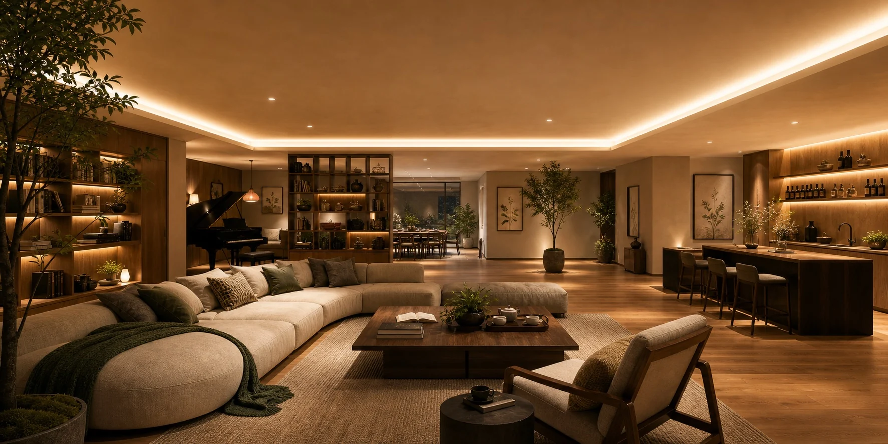
Before · 环境失衡
地下室还没有回到自然舒适的状态。
湿气、露点与空气停滞正在悄悄积累，空间还带着明显的地下感。
Basement Signals · What Makes It Feel Underground
地下室之所以不像住宅，往往先从这些失衡开始。
点开看每一种不适背后，究竟是哪一层环境边界没有被守住。
Basement Signals · What Makes It Feel Underground
地下室之所以不像住宅，往往先从这些失衡开始。 点开看每一种不适背后，究竟是哪一层环境边界没有被守住。Signal · Damp Load
潮不是看见了水，而是材料和表面已经长期背着湿负荷。
当地下室表面温度偏低，而空气里的水汽负担始终偏高时，墙面、地面、柜体背后与软装附近就会慢慢进入一种持续吸湿的状态。即使没有明显水迹，空间也已经开始失去干爽感。
Basement System · Value Beyond Ground Level
地下空间真正被唤醒，住宅的边界才会向下延展。
地下室的价值，从来不在面积的增加，而在它是否能够摆脱潮、霉、闷、异味与压迫感，重新回到一种安静、稳定、可久留的住宅状态。只有当身体愿意在这里放松下来，空间才算真正被生活接纳。
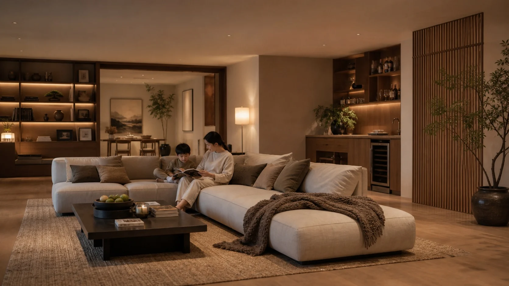
查看环境参数
会客停留时间拉长之后，空气依旧保持干爽、稳定与轻松。
System Understanding
真正决定地下室气质的，从来不是表面，而是环境本身。
地下空间是否自然，不取决于材料堆得多满，而取决于空气、湿度、温度、排风与排水能否长期维持在一种稳定而克制的秩序里。空间一旦失去这层秩序，再好的装修也很难留住舒适。
地下室的舒适，不是被装饰出来的，而是被系统安静守住的。
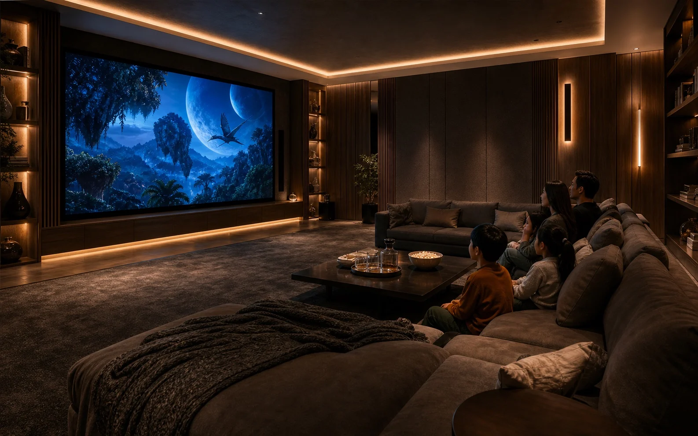
查看环境参数
多人观影时 CO₂ 不会悄悄堆积，空间依旧不闷、不潮。
水的来与去都安静有序，地下室才会有真正的从容。
当地下空间开始承接洗衣、卫浴、茶水与日常清洁，可靠的排水与污水提升就不再只是设备问题，而是一层生活能否被安稳托住的前提。看不见的秩序，往往决定了最真实的安心。
水若不能稳定离开，地下室就很难真正回到自然舒适。
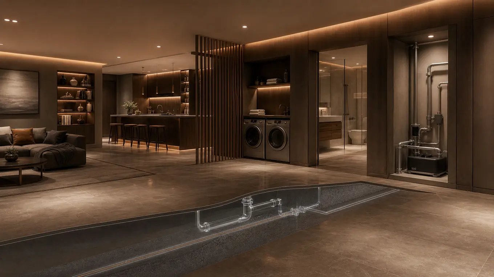
查看环境参数
洗衣、卫浴与茶水进入地下之后，空气与排水都维持在稳定状态。
Activity Layer
真正舒展的空间，不会让身体先感到沉重。
人在活动时，对闷感、湿热和空气停滞会格外敏感。地下空间若想承接运动、停留与交流，就要先让温湿度、风速与空气更新维持在一种轻盈而稳定的状态，让体感始终是舒展的，而不是被环境牵制的。
当地下室不再显得压、重、闷，人的动作与呼吸才会自然展开。
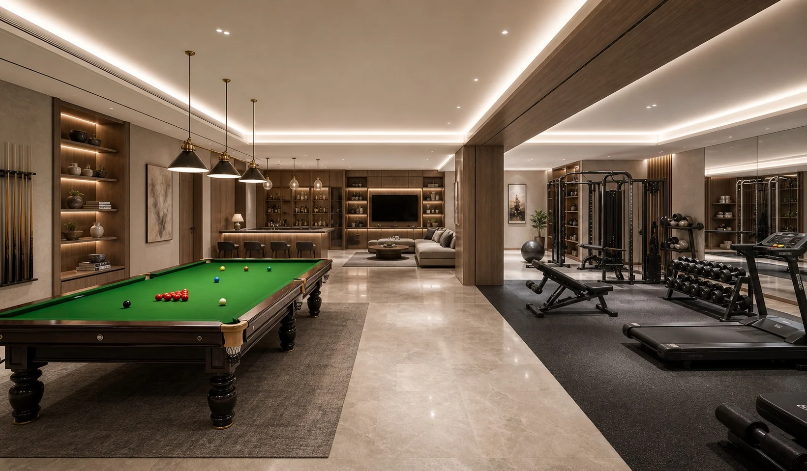
查看环境参数
运动与停留并存时，风速、湿度与空气更新都维持在舒展区间。
Reading Layer
安静从来不是无声，而是环境终于不再打扰人。
阅读、音乐、收藏与独处，需要的不是刻意营造的气氛，而是一种被稳定空气、柔和光线与克制湿度轻轻托住的背景。只有当潮感、闷感与噪声都退到后面，空间才会真正显出它的安静气质。
光落在该落的位置，空气停在恰好的边界，地下室才会留下从容本身。
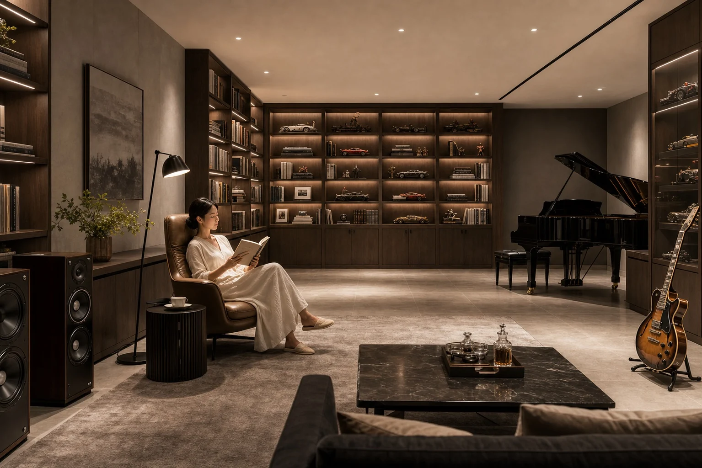
查看环境参数
阅读与独处停留时，空气背景安静而稳定，不会干扰人的专注。
Living Layer
生活可以被安放得很完整，前提是秩序先于热闹建立。
当地下室开始承接餐、洗、卫与日常起居，它就不再只是功能延伸，而是另一层完整的生活。空气、排水、除湿与气味边界若被妥善安排，复杂也会显得自然；若这些底层秩序失衡，再大的空间也只会显得凌乱和沉重。
真正高级的复合空间，往往是因为那些看不见的部分已经先被安放好了。
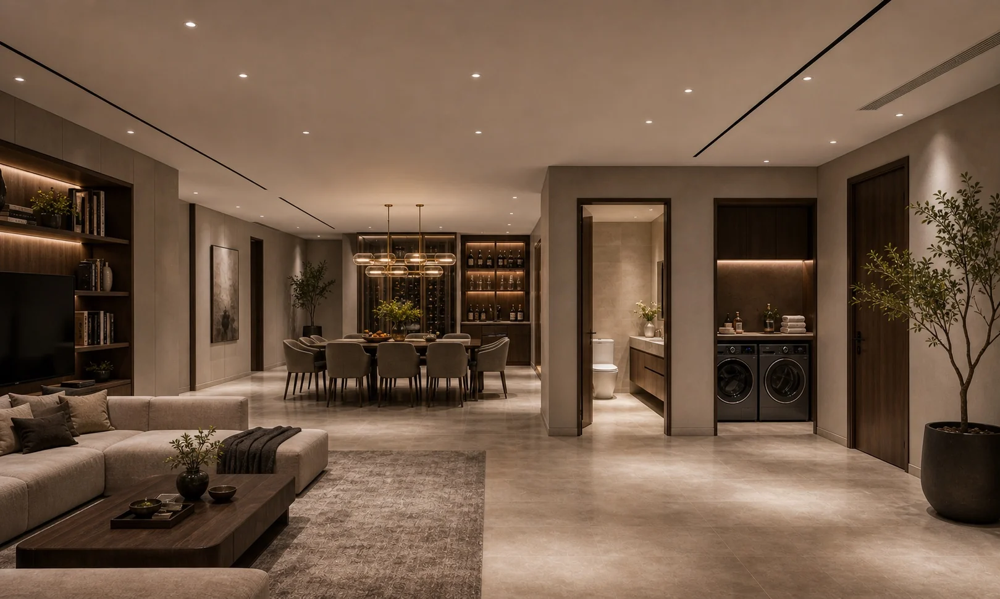
查看环境参数
餐、洗、卫共同进入一层之后，空气、除湿与排水依旧保持平衡。
Tea Room Layer
真正沉静下来的，不只是节奏，还有空气本身。
茶香、木作、织物与久坐会客，都需要一种安静、干爽、无异味的背景。当地下空间的送风足够轻，湿度足够稳，光线足够柔和，人的心绪才会慢下来，空间也才会显出细腻的层次。
好的地下茶室，不是多了一处场景，而是留下了一种可被长久安放的静气。
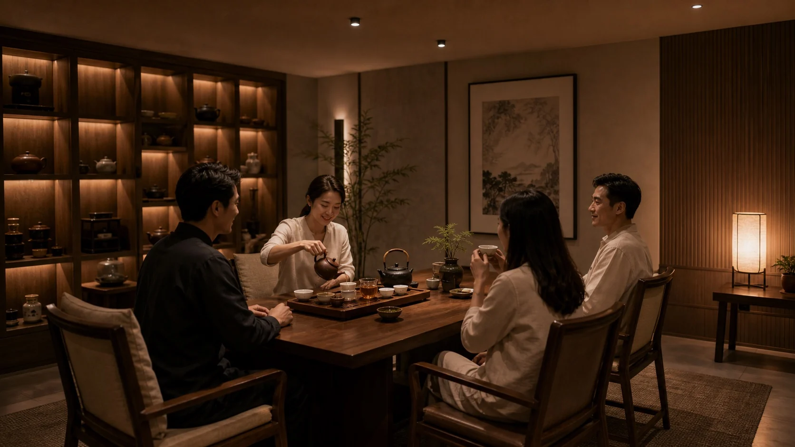
久坐会客与茶香停留时，空气依旧轻、干爽、安静。
Cigar Lounge Layer
有些气味可以被保留，但不应该失去边界。
兴趣空间真正迷人的地方，不在于氛围做得多浓，而在于它始终清楚自己停留在哪里。当地下室能够把排风、补风、压力与湿度组织好，气味便会停在应有的范围之内，不侵扰，也不外溢。
边界被建立之后，兴趣才会显得从容，而不是成为整层空间的负担。
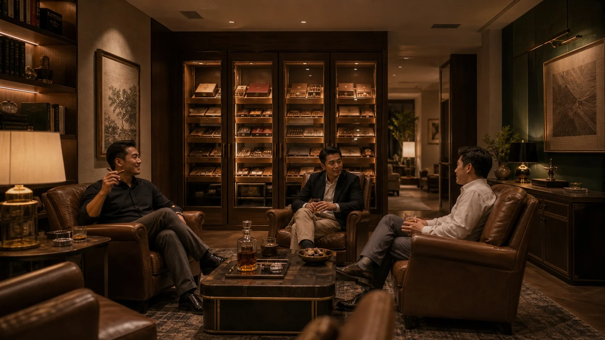
气味被留在独立边界内，不向整层空间外溢。
Wine Cellar Layer
真正值得被珍藏的，永远需要一个长期稳定的背景。
酒窖之所以动人，不是因为被展示，而是因为温度、湿度与洁净空气始终保持在一种安静而可信的秩序里。当地下空间具备了这层稳定，收藏、品鉴与会客便会自然发生，而不需要刻意营造姿态。
地下室的私密与安静，本就是一种天赋；系统所做的，只是让这份天赋不被破坏。
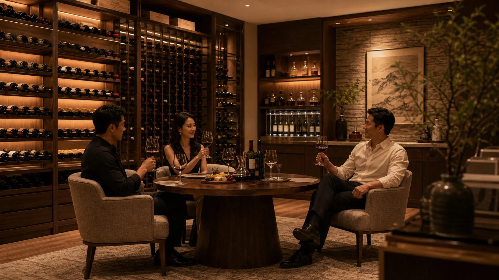
恒温恒湿之外，更重要的是空气始终洁净、稳定、可信。
Game Room Layer
热闹可以发生，但空气不该因此变得沉重。
多人停留之后，最先失衡的往往不是秩序，而是空气。CO2、湿热与气味会悄悄抬升，让原本轻松的交流慢慢变得疲惫。当地下空间仍能把空气维持在清爽、稳定的区间里，热闹就不会变成负担。
真正被照顾好的社交空间，是欢聚可以久一点，而身体始终不被环境拖累。
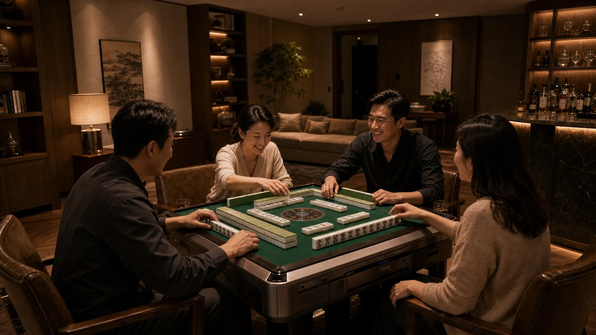
多人同处一室时，空气依旧轻，不会越坐越闷。
Party Layer
聚会真正高级的地方，不在表面的热烈，而在环境始终不失分寸。
当人数、声音、酒水与活动量一起增加时，地下空间最容易先失去的是空气的轻盈感。若温湿度与空气品质仍能被稳稳托住，热闹便会显得从容，而不是喧哗之后只剩闷、潮与疲惫。
好的聚会氛围，从来不是把人推向兴奋，而是让热烈之中依然保有舒适。
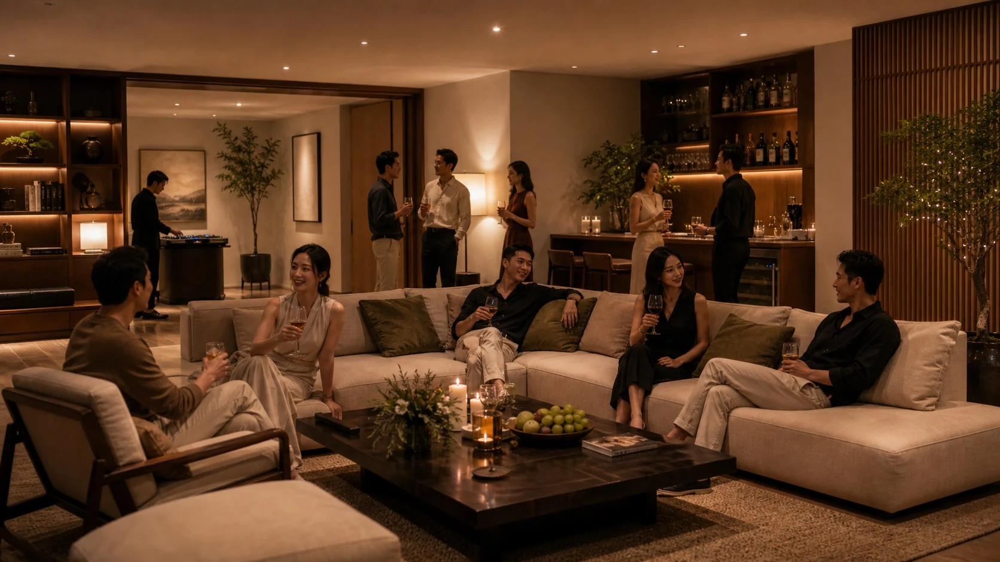
人数上来之后，系统会主动把闷、热与气味负担带走。
Meditation Layer
真正让人静下来的，从来不是装饰，而是环境终于足够温柔。
当空气流速、温湿度、噪声与异味都退到几乎不可察觉的背景里，人才能真正感到身体被放松地接住。地下空间若能保持低噪、干爽、柔和，反而更适合成为一处沉静下来的所在。
系统守住边界之后，空间便不再只是功能，而会慢慢显出精神上的安放感。
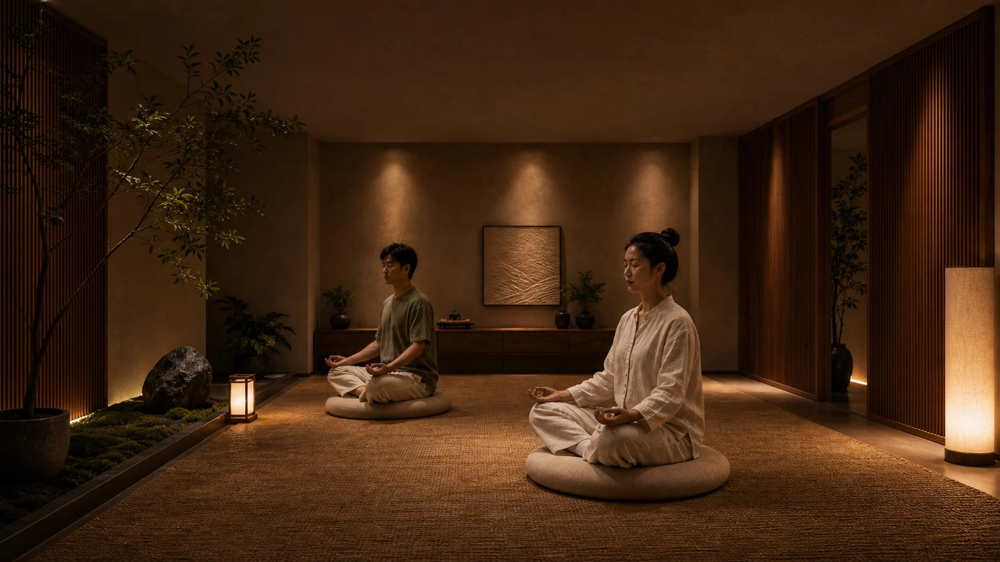
当风速、湿度与气味都退到背景里，人才真正能安静下来。
Basement Summary
当地下室不再被潮、闷、霉与压迫感定义，它就会安静地成为住宅的另一层生活。
我们始终认为，地下室最重要的不是多做了多少功能，而是能不能先把潮、闷、霉、异味与压迫感安静地消失掉。
当空气、温湿度、排水与光线一起被妥善处理，地下空间就会像地上一样柔和、舒适，并自然承接真实生活。
Design Before Decoration
先定义生活，再设计系统
住宅的舒适、健康、安静与长期稳定，不是装修结束前补上的设备配置，而是从一开始就进入建筑、空间和生活逻辑的基础判断。
看不见的秩序，应该先于看得见的表面成立。
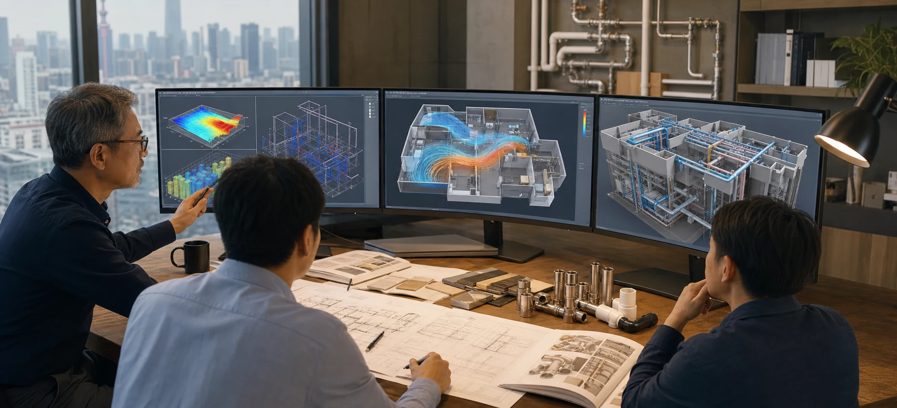
Design Is Optimization
在给定的极限条件下，求住宅机电的最优解
住宅设计从来不是在无限空间和无限预算里选择设备。家庭需求、气候、围护、层高、设备位置、声学目标、参考预算与维护条件共同限定边界，设计能力体现在这些条件同时存在时，仍能找到可建造、可验证、可长期运行的系统解。
一户一方案不是套用品牌与模块，而是在需求、建筑条件与参考预算内，用专业判断完成定制。
家庭成员、生活方式、身体感受、湖南气候、建筑边界与参考预算共同构成设计起点。
不按品牌预设系统路线，而是在负荷、容量、路径、噪声、能耗、可靠性和施工界面之间完成权衡。
方案本身没有高低之分，也不以设备多少、品牌或价格定义优劣；只判断它是否适合这套住宅，并能否长期兑现目标。
Technology Service, Not Brand Sales
产品不是方案的起点，适合这一户的技术路径才是。
住宅系统以 316L 不锈钢生活给水、PP 生活排水与暖通为明确技术边界；设备、阀件、控制与辅材仍需结合这一户的真实条件完成专业筛选，而不是由品牌或固定模块预设答案。
产品的范围，远不止一台设备。设备、管材管件、阀门、控制与辅材共同决定系统是否可靠。
在相同需求、建筑条件、参考预算、性能目标和维护要求下比较不同技术路径，让选择依据可以被看见。
全球主流暖通品牌 · 行业专业品牌 · 多路径比选围绕 316L 给水、PP 排水与住宅暖通，从设备、管材管件、阀门、控制和辅材的性能、兼容性、施工条件与长期服务逐项筛选。
316L 给水 · PP 排水 · 住宅暖通 · 长期可靠性产品选型必须进入负荷、水力、风量和流量计算，进入 BIM 与节点设计，接受规范施工、系统调试和实测结果的共同验证。
国家标准与规范 · 施工工艺 · 标准调试 · 实测记录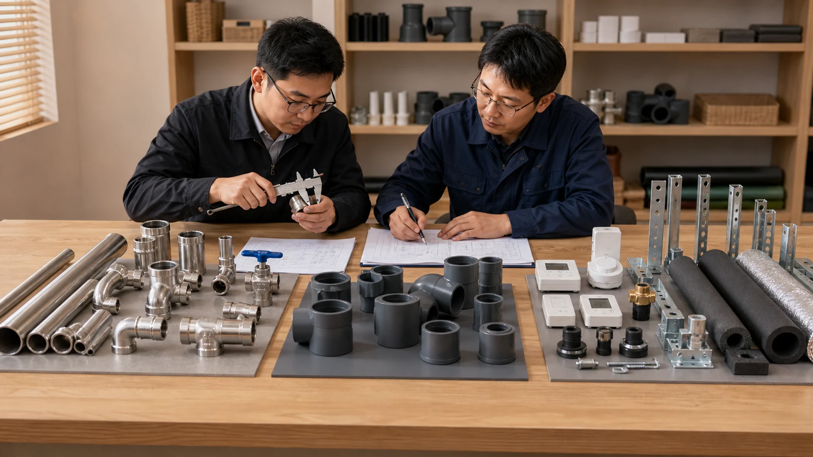
我们的定位是技术服务公司，不是品牌代理营销公司。选择产品、应用技术、组织施工并验证结果，才是完整责任。
Design Directs Construction
设计指导施工，施工还原设计
这句话定义了住宅机电从图纸走向居住结果的责任关系。设计以现行国家标准和工程规范为底线，把目标、参数、空间边界与关键节点表达成现场能够执行和检查的条件；施工再通过放样、样板、过程检查、隐蔽验收与标准调试逐项还原。
从生活需求和建筑条件出发，完成负荷、容量、路径、控制与专业界面的计算和判断。
负荷计算 · 系统参数 · 综合图 · 关键节点在封闭之前完成定位、样板、界面与偏差复核，让每一项隐蔽关系都有检查依据。
放样复核 · 样板确认 · 过程检查 · 隐蔽验收以风量、水力、温湿度、噪声和控制逻辑验证运行结果，而不是以设备通电代替交付。
系统平衡 · 逻辑验证 · 性能记录 · 运维档案现场变更必须回到设计复核，设计判断必须接受运行结果检验。
01 / Needs & Boundaries
先把这一户住宅的需求与边界定义清楚，设计才有准确起点。
家庭成员、生活方式、健康关注、湖南气候、建筑条件、参考预算与长期维护要求共同构成输入。系统路线不由品牌预设，而由这些真实条件推导。
一户一方案，不是增加设备，而是让每一项选择都适合这一户。
03 / Engineering Calculation & BIM
设计不是经验估算，而是用专业计算与数字模型把判断做实。
以 InstalSystem 5、Revit、SketchUp 等专业工具完成热负荷、水力、管径、阻力、风量与流量计算，并通过 BIM 建模校核净高、检修空间和专业碰撞，让设备选型与管线路径都有依据。
计算决定能力边界，模型提前发现冲突，图纸才有资格指导现场。
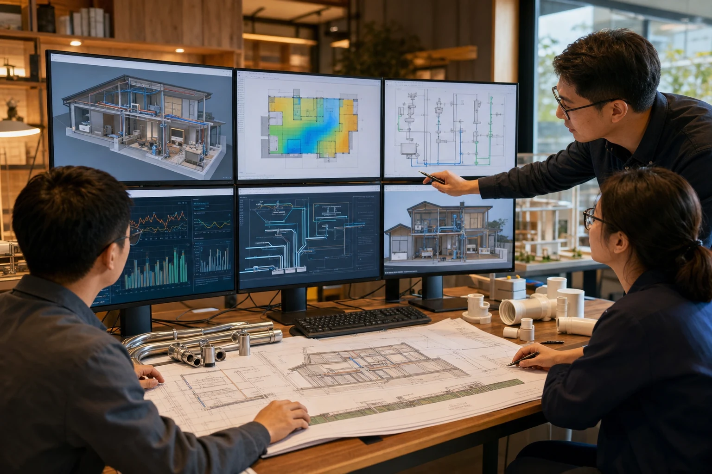
04 / Drawings & Technical Briefing
计算结果必须被翻译成现场看得懂、做得到、查得出的施工条件。
综合点位、管线标高、设备基础、检修边界、控制逻辑与关键节点被落实到施工图、BIM 模型、节点详图和交底清单中，并通过样板确认统一做法。
设计指导施工，首先意味着设计必须给出足够清楚的现场语言。
05 / Direct Construction Team
优秀设计由自有施工团队还原，责任不在层层转包中被稀释。
设计工程师、项目负责人和专业施工团队围绕同一套图纸与标准工作；从放样、材料进场、工序检查到隐蔽验收，成熟的工程管理把人员、进度、界面和质量组织成可追溯的现场秩序。
施工还原设计，依靠的不是口号，而是同一团队对标准持续负责。
07 / Safety, Protection & Records
专业交付不仅看隐蔽后的结果，也看施工过程是否安全、文明、可追溯。
进场交底、临电与动火管理、粉尘控制、材料分区、成品保护和每日收尾共同守住住宅现场；关键工序、隐蔽节点、压力测试与变更复核均留下影像和记录。
看不见的工程，更需要用看得见的过程证明。
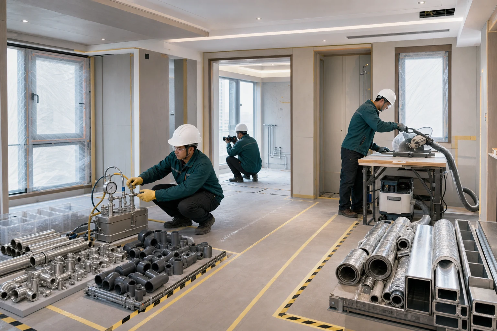
所以，设计与交付在这里并不是两件分开的事：设计先把人的健康、舒适、安静与长期稳定想清楚，交付再把这些判断安静留进房子里。真正完成之后，被记住的不会是图纸和施工，而是空气自然、水路有序、排水安静，生活因此被稳稳托住。
02 / Survey & Data Collection
现场勘察不是简单量尺寸，而是把设计所需的真实条件收集完整。
复核原始图纸、结构与围护，测量层高、竖井、设备间和管线路径，并核对电力、给排水、室外机位、噪声敏感区及其他专业接口，形成基础数据与风险清单。
数据不完整，后面的计算越精细，偏差也可能越确定。
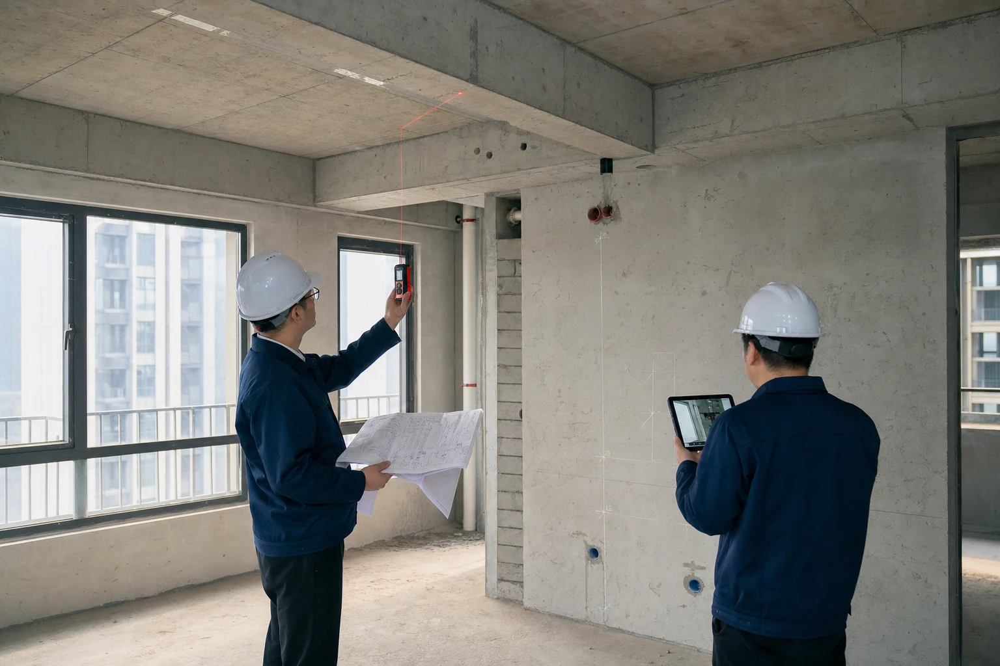
06 / Tools, Measurement & Commissioning
专业工具保证施工精度，检测仪器让运行结果可以被验证。
施工按工序配置喜利得、RIDGID、Milwaukee、DEWALT、Makita 等专业工具；调试与验收使用声级计、热成像仪、温湿度记录仪、风量罩、差压仪和超声波流量计，并完成 316L 给水压力与流量复核、PP 排水通球和灌水检查，逐项验证暖通、给水、排水与控制逻辑。
设备通电不等于交付，实测结果回到设计目标才算完成。
08 / Handover & After-sales
交付不是离场，而是把系统带入长期稳定运行的开始。
竣工图、设备参数、调试记录、隐蔽影像、保修资料和维护要求形成完整档案；使用培训、周期巡检、故障响应与后续优化让问题有依据可查、有人持续负责。
真正成熟的系统，不只在交付当天成立，也在多年运行后保持秩序。
Visible Deliverables
让每一个判断，都成为可以被验证的交付成果
交付不是一叠图纸，而是一套把需求、计算、施工与运行结果连接起来的完整依据。
从住宅条件、生活方式与环境风险出发，在多条技术路径中形成适合这一户的系统方案。
需求诊断 · 多路径比选 · 系统方案说明把能力边界、产品筛选和空间关系落实为有计算依据、可复核的设计文件。
负荷与水力计算 · 选型参数 · BIM 综合明确关键节点、专业界面与现场顺序，让设计判断在自有团队的施工中被完整还原。
节点深化 · 施工交底 · 隐蔽验收记录用暖通实测、316L 给水压力与流量复核、PP 排水通球灌水检查验证结果，并为长期维护留下完整依据。
系统实测 · 给排水验收 · 竣工档案 · 维护计划联系我们 Get in Touch
无论您是正在规划理想居所，还是想了解长沙服务与到店方式，我们都愿意认真回应您的问题。
Residential Solution Paths
住宅类型不同，系统判断的起点也不同
先选择更接近您的住宅类型，查看我们会优先判断的系统边界。
URBAN FLAT
先处理高层住宅里最容易被忽略的环境波动
Project Access · Changsha
让一次联系，成为项目被认真理解的开始
您可以预约到店，也可以先提交住宅类型、面积与当前关注的问题，我们会据此安排更合适的沟通方式。
欢迎预约来店体验，具体路线将在沟通后发送。
专业能力 System Expertise
围绕高端住宅环境，我们以空气、水、排水与机电协同为核心，建立完整的系统判断、方案衔接与落地配合能力。